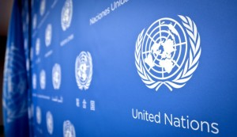

ООН: Без реформы международной финансовой архитектуры бедняки не вырвутся из нищеты.
Автор K-News -15:08, 05.04.2019
Без совершенствования международной финансовой архитектуры государства не смогут выполнить свои обещания по сдерживанию глобального потепления и ликвидации бедности к 2030 году. К такому выводу пришли авторы нового доклада ООН по финансированию развития.
В этом документе отмечается, что масштабы международной помощи на цели развития не увеличиваются. Потоки прямых иностранных инвестиций в развивающиеся страны в 2018 году выросли, но они по-прежнему распределяются неравномерно. К тому же инвесторы обходят вниманием многие наименее развитые страны.
Глобальная экономика растет, а заработная плата снижается
«Глобальный экономический рост достиг своего пика, составив три процента, в то время как уровень заработной платы снизился на 1,8 процента и достиг самого низкого показателя за последнее десятилетие. Масштабы неравенства растут и более 30 развивающихся стран уже оказались или скоро окажутся в долговой яме», — заявила первый заместитель Генерального секретаря ООН Амина Мохаммед в связи с презентацией доклада.
Генеральный секретарь ООН Антониу Гутерриш в предисловии к этому документу призвал богатые страны выполнять свои финансовые обязательства по наращиванию официальной помощи на Цели развития, предоставлять развивающимся странам более широкий доступ к финансовым рынкам и частным инвестициям. По его словам, необходимо добиваться совершенствования экономической и финансовой международной систем, а также взять на вооружение инновационные подходы финансирования проектов, призванных покончить с голодом, бедностью и другими проблемами современности.
Без реформы международной финансовой архитектуры бедняки не вырвутся из нищеты
«Международное сообщество не сможет достичь Целей в области устойчивого развития без фундаментальных изменений в международной финансовой системе, которые позволят нам противостоять насущным глобальным угрозам и восстановить доверие к механизмам международного сотрудничества», — заявил Антониу Гутерриш. Он призвал международное сообщество и все государства выполнить рекомендации, изложенные в новом докладе.
Над подготовкой доклада работали эксперты из 60 учреждений ООН и международных организаций. Они назвали пять основных задач, которые помогут обеспечить финансирование Целей устойчивого развития: